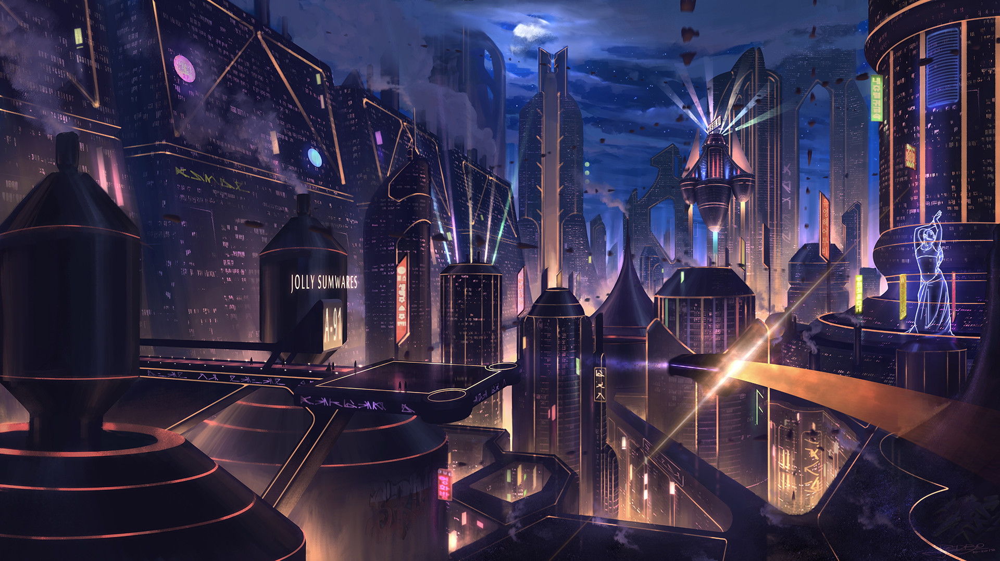

Słońce minęło zenit, uderzyło w udręczone grzbiety książek, roziskrzyło oszklone półki, polerowane drzwi szafy, gorące, nieprzytomne błyski zadrżały na tapetach. Nadciągała fatalna pora - bliska była godzina, kiedy rozwścieczone słońce martwo zabłyśnie nad jedenastopiętrowym punktowcem z przeciwka i przestrzeli na wylot całe mieszkanie. Malanow zamknął okno - oba skrzydła - i starannie zasunął ciężką żółtą portierę. Potem podciągnął kąpielówki, poczłapał boso do kuchni i otworzył drzwi na balkon. Było parę minut po drugiej. Na kuchennym stole wśród okruchów chleba widniała martwa natura - patelnia z zaschniętymi resztkami jajecznicy, niedopita herbata w szklance i obgryziona przylepka z zaciekami roztopionego masła, w zlewozmywaku góra nie umytych naczyń, pokrytych wiekowym pyłem.
Artykuł 2
Można było oczywiście iść do Moskiewskiego, tam mają przerwę od pierwszej do drugiej, ale za to okropne kolejki, i wlec się w taki upał... Co za parszywa całka, niechże ją! No dobrze, powiedzmy, że to stała... niezależna od omegi. Jasne, że niezależna. Z najbardziej podstawowych założeń wynika, że nie może być zależna. Malanow wyobraził sobie tę kulę i jak całkowanie przebiega po jej całej powierzchni. Nie wiadomo skąd wypłynął nagle wzór Żukowskiego. Ni z gruszki, ni z pietruszki. Malanow odpędził od siebie natrętny wzór, ale ten znowu się pojawił... Może zastosować konforemne przekształcenie, pomyślał.
Artykuł 3
Łososia w sosie własnym i kawał szynki z dołożoną zielonkawą piętką. Potem zabrał się do zmywania naczyń. Było absolutnie jasne, że wobec tych wspaniałości w lodówce brud w kuchni wygląda szczególnie fatalnie. W tym czasie telefon dzwonił dwukrotnie, ale Malanow tylko zaciskał zęby. Nie odbiorę i już. Niech się powieszą razem ze swoimi zajezdniami i garażami. Niestety, patelnię również trzeba będzie umyć, to nieuniknione. Patelnia posłuży teraz do znacznie wyższych celów niż jakaś tam jajecznica... No bo na czym polega istota rzeczy? Jeśli całka istotnie równa się zeru, to po prawej strome zostaje tylko pierwsza i druga pochodna... Sens fizyczny nie jest dla mnie zupełnie jasny, ale tak czy owak te bąble wyglądają bardzo interesująco. A co? Właśnie tak je nazwę, bąble. Nie, źle, lepiej “kawerny". Kawerny Malanowa. M-kawerny. Hm... Ustawił na półkach umyte naczynia i zajrzał do miski Kalama. Jeszcze za gorące, paruje. Biedny Kalam. Przyjdzie mu jeszcze chwilę pocierpieć. Przyjdzie Kalamowi jeszcze trochę pocierpieć, póki nie ostygnie... Wycierał właśnie ręce, kiedy go znowu olśniło, zupełnie jak wczoraj. I tak jak wczoraj w pierwszej chwili nawet nie uwierzył. - Poczekajcie, poczekajcie - mamrotał gorączkowo, a nogi już go niosły przez korytarz, po chłodnym przywierającym do stóp linoleum, w gęsty żółty upał, do biurka, do wiecznego pióra... Do diabła, gdzie ono się podziało? Skończył się atrament. Gdzieś tu leżał ołówek... A jednocześnie na drugim, a właściwie na pierwszym, najważniejszym planie: funkcja Hartwiga... z prawej strony nie zostaje nic... Kawerny, okazuje się, są symetryczne względem osi... A całka wcale się nie zeruje! To znaczy do takiego stopnia nie jest zerem ta moja całka, że otrzymujemy wielkość w istotny sposób dodatnią... Niebywałe! Jak mogłem tego od razu nie zauważyć? Nie martw się, Malanow, nie ty jeden nie zauważyłeś. Członek Akademii też nie zauważył... W żółtej, lekko zakrzywionej przestrzeni powoli obracały się, jak gigantyczne bąble, kawerny symetryczne względem osi, materia opływała je, próbowała przeniknąć w głąb, nie mogła, na granicy osiągała prawie niewyobrażalną gęstość i kawerny zaczynały świecić... Jeden Bóg wie, co się tam wyprawiało... Nie szkodzi, to się wyjaśni później... Wyjaśnimy zagadkę włóknistej struktury - to po pierwsze. Łuki Rogozińskiego — to po drugie! A potem mgławice planetarne. Co to było według waszej teorii, aniołeczki moje? Rozszerzające się, zrzucone powłoki? Macie swoje powłoki! Wszystko dokładnie na odwrót! Znowu zabrzęczał przeklęty telefon. Malanow zaryczał z wściekłości nie przestając pisać. Wyłączyć go do wszystkich diabłów. Z boku powinna być taka dźwigienka... Rzucił się na tapczan i zerwał słuchawkę.

Pedro in Space
Artykuł 4
Zmieniła swój minibezrękawnik na minispódniczkę i minibluzeczkę. Trzeba przyznać, że dziewczyna była w wysokim stopniu przebojowa — Malanow nabrał przekonania, że Lida pryncypialnie nie uznawała staników. Na diabła jej staniki, wszystko miała w pierwszorzędnym gatunku bez żadnych staników. O “kawernach Malanowa" jakoś zupełnie zapomniał. Zresztą wszystko przebiegało bardzo przyzwoicie, jak w najlepszych domach. Siedzieli, plotkowali, pili herbatę, pocili się. On już był Dimą, ona dla niego Lidką. Po trzeciej szklance Dima opowiedział kawał o dwóch kogutach - akurat okazał się a propos -a Lidka śmiała się do łez i machała gołą ręką. Malanow przypomniał sobie (w związku z kogutami), że trzeba zadzwonić do Weingartena, ale nie zadzwonił, a zamiast tego powiedział do Lidki: I Lidka szczegółowo, ale bardzo uroczo opowiedziała, jak wygląda na ich obozie problem opalania się. Małanow zrewanżował się opowieścią, jak koledzy pracują przy Wielkiej Antenie. Co to takiego Wielka Antena? Proszę bardzo. Opowiedział, co to takiego Wielka Antena i po co ona komu. Lidka wyciągnęła swoje długie nogi, skrzyżowała je i położyła na krzesełku Bobka. Nogi były gładkie jak lustro. Malanow miał nawet wrażenie, że w tych nogach coś się odbija. Żeby otrzeźwieć, wstał i zdjął z kuchenki kipiący czajnik. Przy tej okazji sparzył sobie palce i niejasno przypomniał sobie historię pewnego mnicha, który wsadził kończynę w ogień, czy też we wrzątek, żeby przepędzić pokusę powstałą na skutek bezpośredniej bliskości pięknej kobiety - taki to był zacięty facet. - Może jeszcze szklaneczkę? - zapytał. Lidka nie odpowiedziała, więc Malanow odwrócił głowę. Dziewczyna patrzyła na niego szeroko otwartymi, jasnymi oczami i na jej lśniącej od opalenizny twarzy malowało się całkowicie zaskakujące uczucie - ni to zmieszania, ni to przerażenia - aż usta otworzyła. - Herbaty? - niepewnie zapytał Malanow, chybocząc czajnikiem. Lidka drgnęła, szybciutko zamrugała powiekami i przesunęła dłonią po czole. - Słucham? - Pytam, czy nalać pani jeszcze herbaty? - Nie, dziękuję... - roześmiała się jak gdyby nigdy nic. - Obawiam się, że pęknę. Muszę dbać o figurę. - Oczywiście! - oświadczył Malanow ze wzmożoną galanterią. - O taką figurę koniecznie należy dbać. Być może nawet warto ją ubezpieczyć... Lidka uśmiechnęła się na sekundę, odwróciła głowę i przez ramię spojrzała na podwórze. Szyję miała długą, gładką, może tylko troszkę zbyt chudą. W Malanowie zrodziło się podejrzenie, że jest to szyja stworzona do pocałunków. Podobnie jak ramiona. Nie mówiąc już o reszcie. Kirke, pomyślał. Zresztą, od razu dodał, ja kocham swoją Irkę i nie zdradzę jej nigdy w życiu.